Maya
Maya is often the first to spot when a friend is having a hard time — she takes a hand, says the calming thing, and stays close. But she has her own worries too: about being left out, about making mistakes, about whether what she made is good enough.
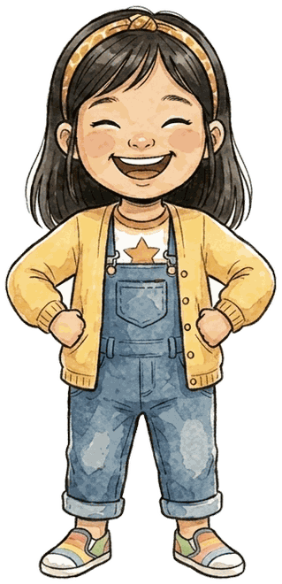
Happy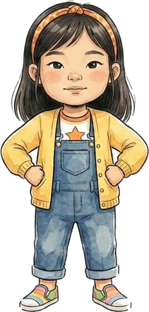
Calm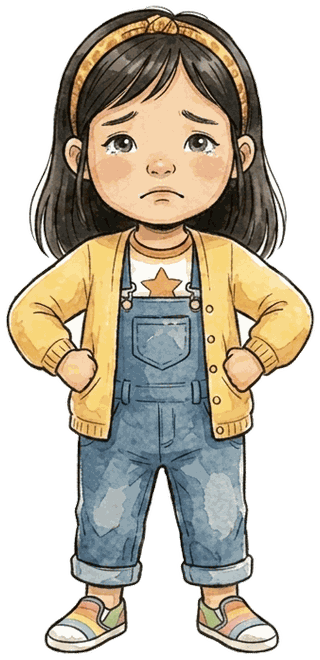
Sad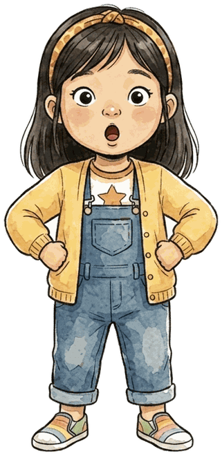
Surprised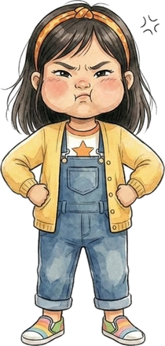
FrustratedRead Maya in: Books 1, 3, 5, 7, 9, 11, 14, 15

Marcus
Marcus feels things quietly — a jumpy tummy before something loud, a flutter before a checkup. He works through it, and then he remembers what helped. By the end of the series he’s the one teaching the calming trick to someone else.
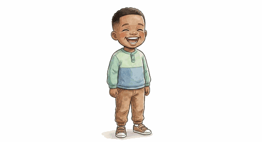
Happy Calm
Calm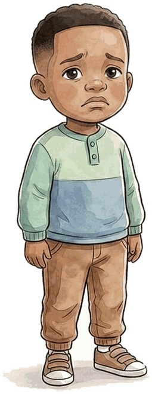
Sad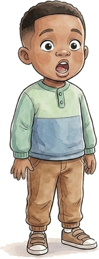
Surprised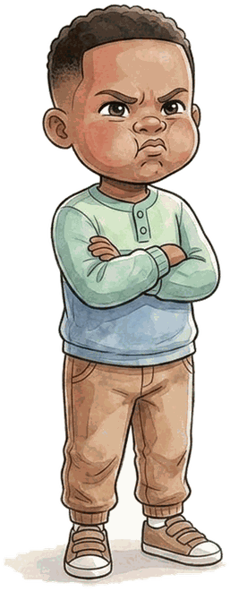
FrustratedRead Marcus in: Books 1, 4, 5, 6, 8, 9, 11, 12, 14, 15

Sophie
Sophie runs ahead, wiggles during story time, and finds waiting almost impossible. Her stories are about learning that her energy isn’t a problem to fix — and that some good things are worth the wait.
 Happy
Happy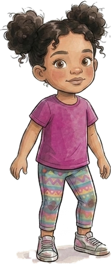
Calm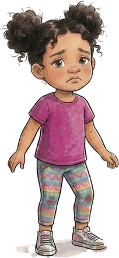
Sad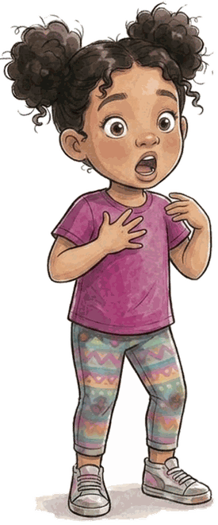
Surprised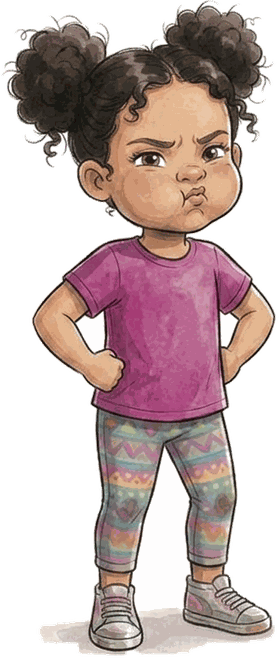
FrustratedRead Sophie in: Books 2, 3, 5, 6, 8, 10, 11, 14, 15

James
James loves lists, facts, and knowing what comes next. When the plan bends he feels it hard — and his stories are about discovering that a changed plan, or a mended toy, can still be exactly right.
 Happy
Happy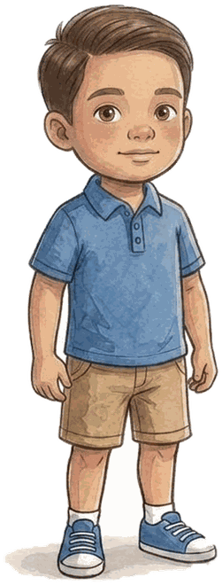
Calm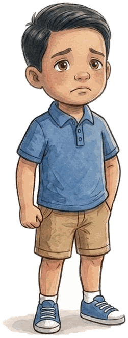
Sad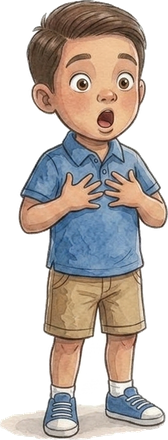
Surprised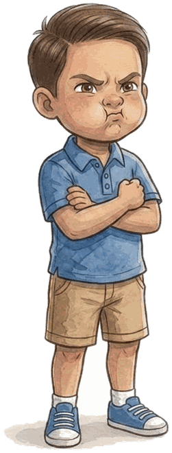
FrustratedRead James in: Books 2, 4, 5, 7, 10, 11, 12, 14, 15
Why five feelings?
Every LittleSprout story turns on one feeling a child can name and point to. Seeing the same four friends move between happy, calm, sad, surprised, and frustrated — and come out okay on the other side — is what makes the feeling feel manageable. Ask your child which face matches how they feel today.